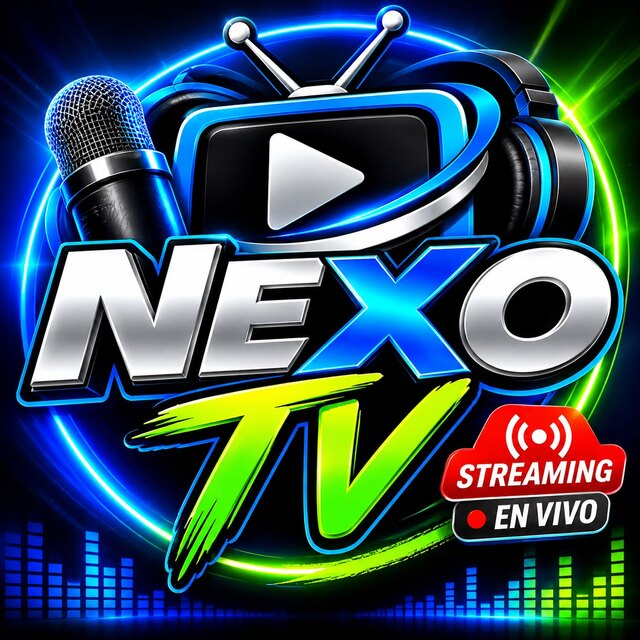

--:--:--Streaming + radio
Nexo TV.Streaming y radio,en vivo.
Un canal nuevo que sale a la vez por streaming y como radio: programas en vivo, otros grabados, y vos del otro lado del WhatsApp.
Imagen ilustrativa
01 / Señal
En vivo
Fuera del aire
La señal en vivo sale muy pronto por acá.
Kick · próxima transmisión según la grilla
02 / Solo audio
Nexo radio
La misma programación, en modo radio: para escucharla en el auto, en el laburo o con la pantalla apagada.
Radio online
—La radio online se conecta muy pronto. Mientras tanto, mandanos tu saludo por WhatsApp.
03 / Programación
Grilla
Horario de Argentina. Grilla de ejemplo · horarios y programas editables
04 / On demand
Programas grabados
Lo que salió al aire queda en YouTube para verlo cuando quieras. Ejemplos: se reemplazan por los videos del canal
05 / Auspicios
Tu marca, al aire.
Una pantalla y una radio al mismo tiempo: tu comercio puede aparecer en los dos. Elegí cómo y te pasamos la propuesta.
Formatos y valores a confirmar con el canal.
06 / Dónde vernos
- KickEn vivo
- TikTokEn vivo
- YouTubeProgramas grabados
- RadioSolo audio
Los links de cada canal se suman acá en cuanto estén listos.

Del otro lado de la pantalla, estás vos.
Saludos, temas, preguntas o publicidad: todo entra por WhatsApp.
Escribir a Nexo TV